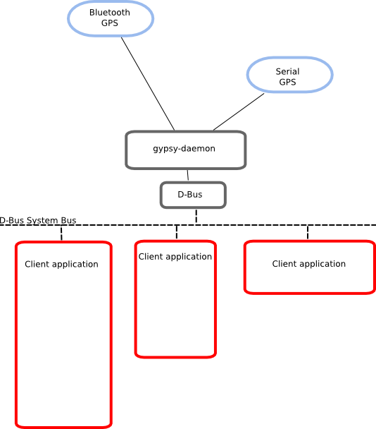

| Gypsy Reference Manual |
|---|
Gypsy's DesignGypsy's Design — An explanation of the design principles behind Gypsy. |
From a users perspective Gypsy is designed to be powerful, yet lightweight enough to be used on low powered systems such as embedded devices. From an application developers perspective Gypsy is designed to be as simple to use as possible.
When we talk about Gypsy, we are really talking about the gypsy-daemon program which is the program that actually connects to GPS devices, parses the data from them, and emits signals onto the D-Bus system bus for listening clients to receive. The figure below shows gypsy-daemon connected to two GPS devices, a Bluetooth one and a serial one, and three clients connected to the D-Bus system bus listening for GPS signals.
Gypsy's client D-Bus methods and signals are grouped into a number of related interfaces. These interfaces are:
org.freedesktop.Gypsy.Server |
Methods that control the functions of the gypsy-daemon server. |
org.freedesktop.Gypsy.Device |
Methods and signals that relate to the functions of the GPS device. |
org.freedesktop.Gypsy.Position |
Methods and signals that relate to the current position of the GPS. |
org.freedesktop.Gypsy.Course |
Methods and signals that relate to the current course of the GPS. |
org.freedesktop.Gypsy.Accuracy |
Methods and signals that relate to the accuracy of the GPS. |
org.freedesktop.Gypsy.Satellite |
Methods and signals that relate to the satellites that the GPS can see. |
Gypsy seperates these interfaces instead of using on large interface so that clients only need to listen for the signals in which they are interested in. This allows clients to remain idle for longer periods, only being woken up when they receive a signal they are interested in. If the client is only interested in when a GPS fix changes, it will not be woken up when the position has changed. Allowing clients to sleep for as long as possible helps to keep CPU usage and conserve power, which is essential for using on an embedded system.
Using D-Bus also enables Gypsy to be used from any language that has D-Bus support. The LibGypsy library uses dbus-glib to provide C support for it, but support also exists for C++, C# and Python to name a few.